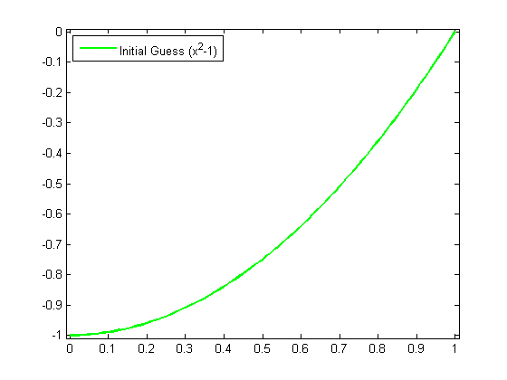
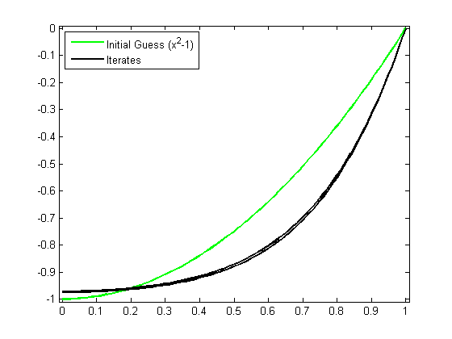
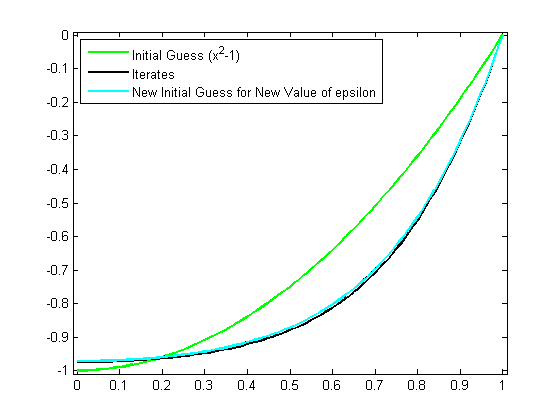
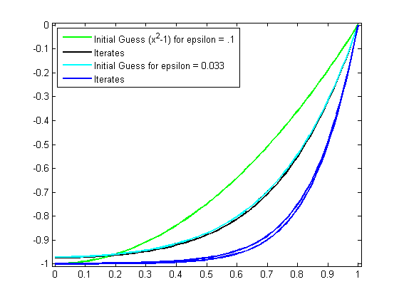
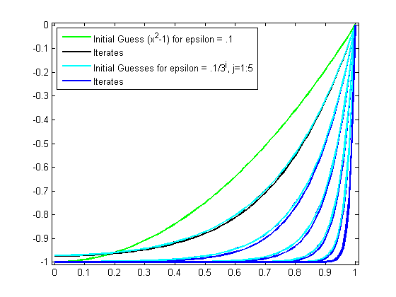
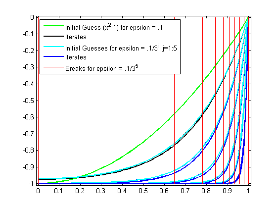
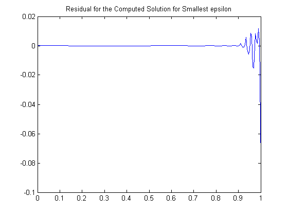

Solving a Nonlinear ODE with a Boundary Layer by Collocation
This demo illustrates how to use spline commands from Curve Fitting Toolbox™ in a nontrivial application.
Contents
- The Problem
- The Approximation Space
- Discretization
- The Numerical Problem
- Linearization
- Linear System to be Solved
- Need Initial Guess for Y
- Iteration
- Getting Ready for a Smaller Epsilon
- Collocation Sites for New Breaks
- Initial Guess
- Iteration with Smaller Epsilon
- Very Small Epsilon
- Plot the Breaks Used for Smallest Epsilon
- Plot Residual for Smallest Epsilon
The Problem
We consider the nonlinear singularly perturbed problem
epsilon D^2g(x) + (g(x))^2 = 1 on [0..1]
Dg(0) = g(1) = 0.This problem is already quite difficult for epsilon = .001, so we choose a modest
epsilon = .1;
The Approximation Space
We seek an approximate solution by collocation from C^1 piecewise cubics with a specified break sequence breaks, hence want the order k to be 4.
breaks = (0:4)/4; k = 4;
We obtain the corresponding knot sequence as
knots = augknt(breaks,k,2)
knots =
Columns 1 through 7
0 0 0 0 0.2500 0.2500 0.5000
Columns 8 through 14
0.5000 0.7500 0.7500 1.0000 1.0000 1.0000 1.0000
Whatever the choice of order and knots, the corresponding spline space has dimension
n = length(knots) - k
n =
10
Discretization
The number of degrees of freedom, 10, fits nicely with the fact that we expect to collocate at two sites per polynomial piece, for a total of 8 conditions, bringing us to 10 conditions altogether once we add the two side conditions.
We choose two Gauss sites for each interval. For the `standard' interval [-1/2 .. 1/2] of unit length, these are the two sites
gauss = .5773502692*[-1/2; 1/2];
From this, we obtain the whole collection of collocation sites by
ninterv = length(breaks)-1; temp = (breaks(2:ninterv+1)+breaks(1:ninterv))/2; temp = temp([1 1],:) + gauss*diff(breaks); colsites = temp(:).';
The Numerical Problem
The numerical problem we want to solve is to find a piecewise polynomial (or pp) y of the given order, and with the given knots, that satisfies the nonlinear system
Dy(0) = 0
(y(x))^2 + epsilon D^2y(x) = 1 for x in colsites
y(1) = 0Linearization
If y is our current approximation to the solution, then the linear problem for the better (?) solution z by Newton's method reads
Dz(0) = 0
w_0(x)z(x) + epsilon D^2z(x) = b(x) for x in colsites
z(1) = 0with w_0(x) := 2y(x) and b(x) := (y(x))^2 + 1.
In fact, by choosing w_0(1) := 1, w_1(0) := 1, and
w_2(x) := epsilon, w_1(x) := 0 for x in colsites
and choosing all other values of w_0, w_1, w_2, and b not yet specified to be zero, we can give our system the uniform shape
w_0(x)z(x) + w_1(x)Dz(x) + w_2(x)D^2z(x) = b(x) for x in sites
where
sites = [0,colsites,1];
Linear System to be Solved
This system converts into one for the B-spline coefficients of its solution z. For this, we need the zeroth, first, and second derivative at every x in sites and for every relevant B-spline. These values are supplied by the spcol command.
Here is the essential part of the documentation for spcol:
SPCOL B-spline collocation matrix.
COLLOC = SPCOL(KNOTS,K,TAU) is the matrix
[ D^m(i)B_j(TAU(i)) : i=1:length(TAU), j=1:length(KNOTS)-K ],
with D^m(i)B_j the m(i)-fold derivative of B_j,
B_j the j-th B-spline of order K for the knot sequence KNOTS,
TAU a sequence of sites,
both KNOTS and TAU are assumed to be nondecreasing, and
m(i) is the integer #{ j<i : TAU(j) = TAU(i) }, i.e., the
'cumulative' multiplicity of TAU(i) in TAU.We use spcol to supply the matrix
colmat = spcol(knots,k, brk2knt(sites,3));
with brk2knt used here to triple each entry of sites, and thus we get in colmat, for each x in sites, the value and the first and second derivatives at x of all the relevant B-splines.
From this, we get the collocation matrix by combining the row triple associated with x using the weights w_0(x), w_1(x), w_2(x) to get the row corresponding to x of the matrix of our linear system.
Need Initial Guess for Y
We also need a current approximation y from our spline space. Initially, we get it by interpolating some reasonable initial guess from our pp space at sites. For that guess, we use the parabola
x^2 - 1
which does satisfy the end conditions and lies in our spline space. We obtain its B-form by interpolation at sites. We select the relevant interpolation matrix from the full matrix colmat. Here it is, in several cautious steps:
intmat = colmat([2 1+(1:(n-2))*3,1+(n-1)*3],:); coefs = intmat\[0 colsites.*colsites-1 0].'; y = spmak(knots,coefs.');
We plot the result, to be sure -- it should be exactly x^2-1.
fnplt(y,'g'); legend('Initial Guess (x^2-1)','location','NW'); axis([-0.01 1.01 -1.01 0.01]); hold on
Iteration
We can now complete the construction and solution of the linear system for the improved approximate solution z from our current guess y. In fact, with the initial guess y available, we now set up an iteration, to be terminated when the change z-y is less than a specified tolerance.
tolerance = 6.e-9;
The max-norms of the change z-y at each iteration are shown as output below, and the figure shows each of the iterates.
while 1 vtau = fnval(y,colsites); weights=[0 1 0; [2*vtau.' zeros(n-2,1) repmat(epsilon,n-2,1)]; 1 0 0]; colloc = zeros(n,n); for j=1:n colloc(j,:) = weights(j,:)*colmat(3*(j-1)+(1:3),:); end coefs = colloc\[0 vtau.*vtau+1 0].'; z = spmak(knots,coefs.'); fnplt(z,'k'); maxdif = max(max(abs(z.coefs-y.coefs))); fprintf('maxdif = %g\n',maxdif) if (maxdif<tolerance), break, end % now reiterate y = z; end legend({'Initial Guess (x^2-1)' 'Iterates'},'location','NW');
maxdif = 0.206695 maxdif = 0.01207 maxdif = 3.95151e-005 maxdif = 4.43216e-010
That looks like quadratic convergence, as expected from a Newton iteration.
Getting Ready for a Smaller Epsilon
If we now decrease epsilon, we create more of a boundary layer near the right endpoint, and this calls for a nonuniform mesh. We use newknt to construct an appropriate (finer) mesh from the current approximation.
knots = newknt(z, ninterv+1); breaks = knt2brk(knots); knots = augknt(breaks,4,2); n = length(knots)-k;
Collocation Sites for New Breaks
Next, we get the collocation sites corresponding to the new breaks
ninterv = length(breaks)-1; temp = ((breaks(2:ninterv+1)+breaks(1:ninterv))/2); temp = temp([1 1], :) + gauss*diff(breaks); colsites = temp(:).'; sites = [0,colsites,1];
and then the new collocation matrix.
colmat = spcol(knots,k, brk2knt(sites,3));
Initial Guess
We obtain the initial guess y as the interpolant from the current spline space to the computed solution z. We plot the resulting interpolant to be sure -- it should be close to our current solution.
intmat = colmat([2 1+(1:(n-2))*3,1+(n-1)*3],:); y = spmak(knots,[0 fnval(z,colsites) 0]/intmat.'); fnplt(y,'c'); h = get(gca,'Children'); legend(h([6 5 1]),{'Initial Guess (x^2-1)' 'Iterates' ... 'New Initial Guess for New Value of epsilon'}, ... 'location','NW');
Iteration with Smaller Epsilon
Now we divide epsilon by 3 and repeat the above iteration. Convergence is again quadratic.
epsilon = epsilon/3; while 1 vtau = fnval(y,colsites); weights=[0 1 0; [2*vtau.' zeros(n-2,1) repmat(epsilon,n-2,1)]; 1 0 0]; colloc = zeros(n,n); for j=1:n colloc(j,:) = weights(j,:)*colmat(3*(j-1)+(1:3),:); end coefs = colloc\[0 vtau.*vtau+1 0].'; z = spmak(knots,coefs.'); fnplt(z,'b'); maxdif = max(max(abs(z.coefs-y.coefs))); fprintf('maxdif = %g\n',maxdif) if (maxdif<tolerance), break, end % now reiterate y = z; end h = get(gca,'Children'); legend(h([10 9 5 4]), ... {'Initial Guess (x^2-1) for epsilon = .1' 'Iterates' ... sprintf('Initial Guess for epsilon = %.3f',epsilon) ... 'Iterates'}, 'location','NW');
maxdif = 0.237937 maxdif = 0.0184488 maxdif = 0.000120467 maxdif = 4.78116e-009
Very Small Epsilon
For a much smaller epsilon, we merely repeat these calculations, dividing epsilon by 3 each time.
for ee = 1:4 knots = newknt(z, ninterv+1); breaks = knt2brk(knots); knots = augknt(breaks,4,2); n = length(knots)-k; ninterv = length(breaks)-1; temp = ((breaks(2:ninterv+1)+breaks(1:ninterv))/2); temp = temp([1 1], :) + gauss*diff(breaks); colsites = temp(:).'; sites = [0,colsites,1]; colmat = spcol(knots,k, brk2knt(sites,3)); intmat = colmat([2 1+(1:(n-2))*3,1+(n-1)*3],:); y = spmak(knots,[0 fnval(z,colsites) 0]/intmat.'); fnplt(y,'c') epsilon = epsilon/3; while 1 vtau = fnval(y,colsites); weights=[0 1 0; [2*vtau.' zeros(n-2,1) repmat(epsilon,n-2,1)]; 1 0 0]; colloc = zeros(n,n); for j=1:n colloc(j,:) = weights(j,:)*colmat(3*(j-1)+(1:3),:); end coefs = colloc\[0 vtau.*vtau+1 0].'; z = spmak(knots,coefs.'); fnplt(z,'b'); maxdif = max(max(abs(z.coefs-y.coefs))); if (maxdif<tolerance), break, end % now reiterate y = z; end end h = get(gca,'Children'); legend(h([30 29 25 24]), ... {'Initial Guess (x^2-1) for epsilon = .1' 'Iterates' ... 'Initial Guesses for epsilon = .1/3^j, j=1:5' ... 'Iterates'},'location','NW');
Plot the Breaks Used for Smallest Epsilon
Here is the final distribution of breaks, showing newknt to have worked well in this case.
breaks = fnbrk(fn2fm(z,'pp'),'b'); bb = repmat(breaks,3,1); cc = repmat([0;-1;NaN],1,length(breaks)); plot(bb(:),cc(:),'r'); hold off h = get(gca,'Children'); legend(h([31 30 26 25 1]), ... {'Initial Guess (x^2-1) for epsilon = .1' 'Iterates' ... 'Initial Guesses for epsilon = .1/3^j, j=1:5' ... 'Iterates' 'Breaks for epsilon = .1/3^5'},'location','NW');
Plot Residual for Smallest Epsilon
Recall that we are solving the ODE
epsilon D^2g(x) + (g(x))^2 = 1 on [0..1]
As a check, we compute and plot the residual for the computed solution for the smallest epsilon. This, too, looks satisfactory.
xx = linspace(0,1,201);
plot(xx, 1 - epsilon*fnval(fnder(z,2),xx) - (fnval(z,xx)).^2)
title('Residual for the Computed Solution for Smallest epsilon');
